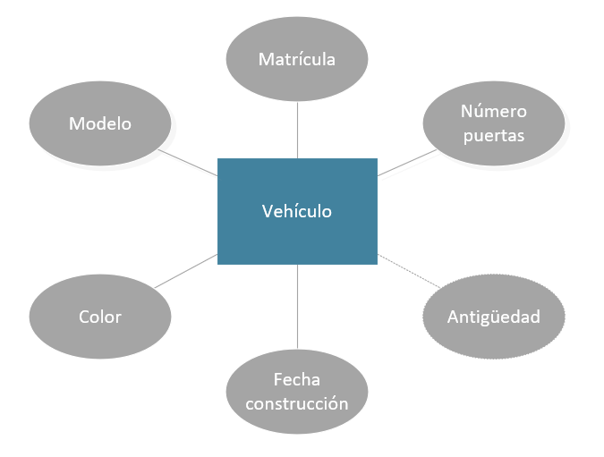

HaB: Introducción a SQL
Por: Fernando Batlle López
Resumen: Modelo Entidad-Relación
- Modelo Entidad-Relación.
- Definición de Entidad.
- Clasves de Entidad: superclave, clave candidata y clave primaria.
- Definición de Relación.
- Definición de Atributo.
- Cardinalidad de las Relaciones.
- Pasos para definir un Diagrama de Entidad-Relación.
Paso Modelo Entidad-Relación a tablas
Introducción
- Un paso más cerca para tener la base de datos final.
- Modelo conceptual.
- Pero no hay un modelo lógico ni físico.
- Modelo E-R es un diseño de alto nivel, próximo al usuario y alejado del diseño físico de la BD.
- Siguiente paso es usar un diseño lógico: Modelo Relacional.
Modelo Relacional
Recordemos:
- Los datos son ordenados en forma de tablas o Relaciones.
- Se componen de columnas y filas.
- Las columnas definen los atributos (nombre, teléfono, código).
- Al conjunto de todos los atributos de una relación se denomina Dominio.
- Modelo muy próximo al modelo físico de BD.
Modelo Relacional
Motivos del éxito del modelo relacional:
- Se basan en el álgebra relacional (modelo matemático con sólidos fundamentos). Ofrecen sistemas simples y eficaces para representar y manipular los datos.
- La estructura fundamental del modelo relacional es precisamente esa, la «relación», es decir una tabla bidimensional constituida por filas (registros o tuplas) y columnas (atributos o campos).
Las relaciones o tablas representan las entidades del modelo Entidad-Relación.
Los atributos de la relación representarán las propiedades o atributos de dichas entidades.
Modelo Relacional
Dada la siguiente entidad:
Modelo Relacional
Se da la siguiente relación:

Cada fila representa un vehículo concreto.
Modelo Relacional
Los datos no forman parte del modelo Relacional.
Cada relación es la definición de la estructura de la tabla: su nombre y la lista de los atributos que la componen.
Una posible representación:

Claves
Al igual que en modelo Entidad-Relación exinten atributos o propiedades que se usan para identificar a los registros.
Para distinguir un registro de otro, se usa la "clave primaria o clave principal".
Esta clave se escoge de entre todas las "claves candidatas" (todas las posibles combinaciones de atributos que permiten identificar inequívocamente a un registro).
Los atributos de la clave primaria no pueden asumir el valor nulo.
Modelo Relacional
Elementos y propiedades del modelo relacional:
- Relación (tabla): Representan las entidades de las que se quiere almacenar información en la BD. Esta formada por:
- Filas (Registros o Tuplas): Corresponden a cada ocurrencia de la entidad.
- Columnas (Atributos o campos): Corresponden a las propiedades de la entidad (sin datos).
Modelo Relacional
Elementos y propiedades del modelo relacional:
- Las relaciones tienen las siguientes propiedades:
- Cada relación tiene un nombre y éste es distinto del nombre de todas las demás relaciones de la misma BD.
- No hay dos atributos que se llamen igual en la misma relación.
- El orden de los atributos no importa: los atributos no están ordenados.
- Cada tupla es distinta de las demás: no hay tuplas duplicadas. (Como mínimo se diferenciarán en la clave principal).
- El orden de las tuplas no importa: las tuplas no están ordenadas.
Modelo Relacional
Elementos y propiedades del modelo relacional:
- Clave candidata: atributo que identifica unívocamente una tupla. Cualquiera de las claves candidatas se podría elegir como clave principal.
- Clave Principal: Clave candidata que elegimos como identificador de la tuplas.
- Clave Alternativa: Toda clave candidata que no es clave primaria (las que no hayamos elegido como clave principal).
- Una clave principal no puede asumir el valor nulo (Integridad de la entidad).
- Dominio de un atributo: Conjunto de valores que pueden ser asumidos por dicho atributo.
- Clave Externa o foránea o ajena: el atributo o conjunto de atributos que forman la clave principal de otra relación.
Clave foránea
Que un atributo sea clave ajena en una tabla significa que para introducir datos en ese atributo, previamente han debido introducirse en la tabla de origen.
Los valores presentes en la clave externa tienen que corresponder a valores presentes en la clave principal correspondiente.
Integridad Referencial
Transformación de un esquema Entidad-Relación a esquema relacional
Importante:
Se deben elaborar los diagramas relacionales de tal forma que, posteriormente al introducir datos, no quede ninguna clave foránea a valor nulo (NULL).
Transformación de Entidades (1)
Dado un diagrama, se recolectan todas las entidades y se transforman en tablas.
El identificador (o identificadores) de la entidad se convierte en la Clave principal.
Transformación de Entidades (2)
Esta clave debe destacar sobre el resto. En algunas herramientas se subrayará. En otros, como Visio, se destaca mediante la indicación "CP" o "PK".
Si hay claves alternativas se ponen en "negrita".
Transformación de Relaciones N:M (1)
Ya se han convertido las Entidades. El siguiente paso implica transformar las Relaciones.
Relaciones N:M:
Este tipo de Relaciones siempre genera una tabla extra.
Son consideradas Tablas de asociación.
Cada una de las Claves primarias de las dos Entidades involucradas se recogen como Claves foráneas en esta Tabla de asociación.
La Clave Primaria de esta Tabla se compone de estas dos Claves foráneas.
Nota: no son dos claves primarias, si no una única clave compuesta por dos campos.
Transformación de Relaciones N:M (2)
Si hay campos propios (en la Relación), se incorporarán a la tabla.
Las Claves foráneas se debein indicar con "CF" o "FK" y un número indicando el orden (sin repetirse).
El orden de los atributos que forman la clave vendrá determinado por las consultas que se vayan a realizar.
No importa si la Participación es 0 (es decir, opcional), ya que se no existiría una fila en dicha tabla.
Transformación de Relaciones N:M (y 3)
Ejemplo: Vehículo - Conductor.

Transformación de Relaciones 1:N (1)
Este tipo de Relaciones no suele generar una tabla extra.
Dos casos posibles.
Caso 1:
- Si la entidad del lado "1" presenta participación (0,1), entonces se crea una nueva tabla para la relación.
- Cada una de las Claves primarias de las dos Entidades involucradas se recogen como Claves foráneas en esta nueva tabla.
- La clave principal de la relación será sólo la clave de la entidad del lado "N".
Transformación de Relaciones 1:N (2)
Ejemplo Caso 1.

Transformación de Relaciones 1:N (3)
Caso 2:
- Para el resto de situaciones, la entidad del lado "N" recibe como clave ajena la clave de la entidad del lado "1".
- Los atributos propios de la relación pasan a la tabla donde se ha incorporado la clave ajena.

Transformación de Relaciones 1:N Caso 1 vs. Caso 2
¿Diferencia?
Una persona puede o no trabajar en una empresa. Por ejemplo, un niño no puede trabajar.
Un trabajador siempre trabaja en una empresa (olvidémonos de los pobres autónomos).
Transformación de Relaciones 1:1 (1)
Este tipo de Relaciones no suele generar una tabla extra.
Tres casos posibles.
Caso 1:
- Si las dos entidades participan con participación (0,1), entonces se crea una nueva tabla para la relación.
- Cada una de las Claves primarias de las dos Entidades involucradas se recogen como Claves foráneas en esta nueva tabla.
- Se escoge como clave principal una de las claves foráneas.
- La otra clave foránea debe ser única (con el fin de evitar duplicados, y conservar la relación 1:1).
Transformación de Relaciones 1:1 (2)
Ejemplo Caso 1.

Transformación de Relaciones 1:1 (3)
Caso 2:
- Si alguna entidad, pero no las dos, participa con participación mínima 0 (0,1), entonces se pone la clave ajena en dicha entidad.
- Con ello se evita los valores nulos.

Transformación de Relaciones 1:1 (3)
Caso 3:
- Si ninguna de las entidades tiene participación mínima 0 (0,1), se escoge una de las claves primarias y se expone como clave foránea y primaria en la otra entidad.
- Se elegirá una u otra forma en función de como se quiera organizar la información para facilitar las consultas.

Caso de estudio: Transformación del esquema Entidad-Relación a esquema relacional
Recordemos nuestro flamante diagrama.

Caso de estudio: Paso 1. Conversión de Entidades a tablas.
Usuario


Caso de estudio: Paso 1. Conversión de Entidades a tablas.
DNI


Caso de estudio: Paso 1. Conversión de Entidades a tablas.
Información empleado


Caso de estudio: Paso 1. Conversión de Entidades a tablas.
Cuenta


Caso de estudio: Paso 1. Conversión de Entidades a tablas.
Tarjeta


Caso de estudio: Paso 1. Conversión de Entidades a tablas.
Movimiento Cuenta


Caso de estudio: Paso 1. Conversión de Entidades a tablas.
Movimiento Tarjeta


Caso de estudio: Paso 1. Tablas.

Caso de estudio: Paso 2. Conversión de Relaciones.
Usuario - DNI


Caso de estudio: Paso 2. Conversión de Relaciones.
Usuario - Información Empleado


Caso de estudio: Paso 2. Conversión de Relaciones.
Usuario - Cuenta


Caso de estudio: Paso 2. Conversión de Relaciones.
Usuario - Tarjeta


Caso de estudio: Paso 2. Conversión de Relaciones.
Cuenta - Tarjeta


Caso de estudio: Paso 2. Conversión de Relaciones.
Cuenta - Movimiento Cuenta


Caso de estudio: Paso 2. Conversión de Relaciones.
Tarjeta - Movimiento Tarjeta


Caso de estudio: Paso 3. Diagrama final Modelo Relacional.

¿Y ahora qué?
- Y otro paso más (o menos, según se mire).
- Disponemos del Modelo conceptual (Modelo Entidad-Relación) y el modelo lógico (Modelo Relacional).
- Falta el modelo físico.
- ¿Cómo obtenemos ese modelo físico?
- La solución: SQL. Transformaremos el último diagrama en un conjunto de instrucciones SQL (llamado "script" o "dump").
- Para posteriormente ejecutarlo a través de algún cliente de bases de datos.
SQL
Recordemos las principales características de SQL.
SQL: Structured Query Language. Lenguaje de consulta estructurado.
Es un lenguaje declarativo de acceso a bases de datos relacionales que permite especificar diversos tipos de operaciones en ellas.
Mediante manejo del álgebra y el cálculo relacional se permite efectuar consultas con el fin de recuperar la información así como hacer cambios en ella.
Estas consultas se realizan mediante comandos de SQL (llamadas Sentencias o Instrucciones).
Explota la flexibilidad y potencia de los sistemas relacionales y permite así gran variedad de operaciones.
SQL: Structured Query Language
- DDL (Data definition Language)
- Lenguaje de definición de datos
- Esquema conceptual
- Permite crear, definir y estructurar la Base de datos (Sus entidades y relaciones)
- P.e. en SQL: CREATE o DROP
- DML (Data Management Language)
- Lenguaje de manipulación de datos
- Permite acceder a los datos. No permiten cambios sobre la estructura
- P.e. en SQL: INSERT o SELECT
- DCL (Data Control Language)
- Lenguaje de control de datos
- Permite crear, definir usuarios, roles y permisos.
- P.e. en SQL: CREATE USER, GRANT PRIVILEGES
Para poder usar el DML, previamente se debe de haber utilizado el DDL.
Proceso de ejecución de sentencia SQL
El proceso de una instrucción SQL es el siguiente:
- Se analiza la instrucción y se comprueba su sintaxis.
- Si es correcta se valora si los metadatos de la misma son correctos (a través del diccionario de datos).
- Si es correcta, se optimiza, a fin de consumir los mínimos recursos posibles.
- Se ejecuta la sentencia y se muestra el resultado al emisor de la misma.
Criterios de notación
- Palabras clave de la sintaxis SQL en MAYÚSCULAS.
- Los corchetes [ ] indican opcionalidad.
- Las llaves {} delimitan alternativas separadas por | de las que se debe elegir una.
- Los puntos suspensivos … indican repetición varias veces de la opción anterior.
Normas de escritura
En SQL no se distingue entre mayúsculas y minúsculas. Da lo mismo como se escriba. El final de una instrucción o sentencia lo marca el signo de punto y coma.
Las sentencias SQL (SELECT, INSERT, …) se pueden escribir en varias líneas siempre que las palabras no sean partidas.
Los comentarios en el código SQL pueden ser de 2 tipos:
- De bloque: comienzan por /* y terminan por */.
- De línea: comienzan por – y terminan en final de línea.
Creación tablas SQL
LENGUAJE DE DEFINICIÓN DE DATOS: DDL
Tipos de datos SQL (1)
Cada uno de los atributos de las entidades o tablas tiene sus propias características.
Es aquí donde entran los tipos de datos, la representación de cada uno de ellos.
No es lo mismo una fecha que una cadena de texto o incluso un fichero.
Tipos de datos SQL (2)
Es importante describir profundamente las propiedades, para que queden bien definidas en la BD.
Es una de las tareas iniciales del diseño de la base de datos.
Es una tarea crítica, ya que con ello se asegura que se usen correctamente en comparaciones, ordenación... (las fechas se comparan de forma distinta a los números)
Tipos de datos SQL (3)
Permiten a otros desarrolladores entender los datos del sistema gracias al esquema de BD.
Finalmente los tipos de datos permiten validación de datos.
Tipos de datos SQL (y 4)
Como se ha visto anteriormente, hay distintas implementaciones de SQL.
Cada una tiene su propia representación. Y por tanto, no son interoperables.
Es decir, para migrar una BD de MySQL a Oracle, se necesita un procesado, o no será exitosa.
Clasificación de tipos de datos SQL
- Numéricos
- Fecha y Hora
- Cadenas de texto (strings en inglés)
- JSON
Tipos de datos: numéricos (1)
Enteros
- TINYINT
- SMALLINT
- MEDIUMINT
- INTEGER
- BIGINT
Tipos de datos: numéricos (2)
Punto flotante
- FLOAT
- DOUBLE
- DECIMAL
Tipos de datos: Enteros (1)
- Subconjunto de los números reales.
- Sin parte decimal
- Conceptualmente, los enteros son infinitos, pero en computación, tienen capacidad finita.
- Correcto: 5 monedas. Incorrecto: 6,65 euros.
- Pueden ser:
- Con signo, 'signed', incluidos números negativos
- Sin signo, 'unsigned', que empiezan en 0
Tipos de datos: Enteros (y 2)
Los datos tipo Enteros difieren en su tamaño.
Recae en el desarrollador en decidir el tamaño oportuno
Cuanto más grande sea el tamaño, más espacio ocupará en memoria y en disco
Por contra, si se escoge uno sin tamaño suficiente, la BD dará error al introducir datos
Tipos de datos: Enteros con signo (1)
| Data type | Bytes | Mínimo valor | Máximo valor |
|---|---|---|---|
| TINYINT | 1 | -128 | 127 |
| SMALLINT | 2 | -32768 | 32767 |
| MEDIUMINT | 3 | -8388608 | 8388607 |
| INTEGER | 4 | -2147483648 | 2147483647 |
| BIGINT | 8 | -9223372036854775808 | 9223372036854775807 |
Tipos de datos: Enteros con signo (2)
Caso práctico: deseamos crear un campo donde se almacene la EDAD.
Mejor selección: TINYINT
A lo sumo se llega a los 110 años
Tipos de datos: Enteros con signo (3)

¿Quiero llegar tan lejos :-O?
Tipos de datos: Enteros con signo (y 4)
No vale TINYINT en este caso. El sistema lanzará un error
Segunda mejor opción: SMALLINT
Nadie vive tanto... si es un ser humano
Tipos de datos: Enteros sin signo (1)
| Data type | Bytes | Mínimo valor | Máximo valor |
|---|---|---|---|
| TINYINT | 1 | 0 | 255 |
| SMALLINT | 2 | 0 | 65535 |
| MEDIUMINT | 3 | 0 | 16777215 |
| INTEGER | 4 | 0 | 4294967295 |
| BIGINT | 8 | 0 | 18446744073709551615 |
Tipos de datos: Enteros sin signo (y2)
Retomando el ejemplo de la edad, ahora existe una mejor solución que SMALLINT
TINYINT UNSIGNED: hasta 255 años!
Este cambio implica ahorrarse un Byte por cada entrada de datos
Tipos de datos: Números de punto flotante
Representan números reales en computación. Miden cantidades contínuas, como por ejemplo, peso, altura, velocidad
En Mysql, los decimales se representan con "." en vez de ",".
MySQL posee dos tipos para aproximaciones: FLOAT (4 Bytes) y DOUBLE (8 Bytes)
Tipos de datos: Números de punto flotante
Y uno para punto-fijo: DECIMAL
Éste último es usado cuando se requiere conservar la precisión (Rockefeller no quiere perder ni un céntimo!!)
A costa de velocidad (el procesamiento de los DECIMAL es mucho mayor que el de los FLOAT)
Tipos de datos: Números de punto flotante
En DECIMAL se debe especificar su alcance: [M, D]
M es el número máximo de digitos (la precisión)
D es el número de digitos a la derecha del punto decimal (la escala)
Ejemplo: DECIMAL(5, 2) permite insertar números de cinco dígitos, de los cuales, 3 antes del punto decimal, 2 después
Tipos de datos: Números de punto flotante
Cuidado con la precisón!!!
mysql> CREATE TABLE Numbers (Id TINYINT, Floats FLOAT, Decimals DECIMAL(3, 2));
mysql> INSERT INTO Numbers VALUES (1, 1.1, 1.1), (2, 1.1, 1.1), (3, 1.1, 1.1);
mysql> SELECT * FROM Numbers;
+------+--------+----------+
| Id | Floats | Decimals |
+------+--------+----------+
| 1 | 1.1 | 1.10 |
| 2 | 1.1 | 1.10 |
| 3 | 1.1 | 1.10 |
+------+--------+----------+
3 rows in set (0,00 sec)
mysql> SELECT SUM(Floats), SUM(Decimals) FROM Numbers;
+--------------------+---------------+
| SUM(Floats) | SUM(Decimals) |
+--------------------+---------------+
| 3.3000000715255737 | 3.30 |
+--------------------+---------------+
1 row in set (0,08 sec)
Tipos de datos: Numéricos
Otras operaciones
Además de las operaciones típicas con valores numéricos (+, -, *, /), otras funciones útiles son:
- ABS(num): devuelve el valor absoluto.
- SQRT(num): devuelve la raíz cuadrada.
- POWER(b,e): devuelve la potencia de b elevado a e.
Existen otras funciones para grupos de valores (suma, media, máximo, …) que se verán en apartados posteriores.
Tipos de datos: Fecha y Hora
- DATE
- TIME
- DATETIME
- YEAR
- TIMESTAMP
MySQL intenta interpretar las fechas en diferentes formatos, pero siempre deben insertarse en el siguiente order: Año/Mes/Día
Tipos de datos: Fecha y Hora
DATE
Para almacenar fechas. En MySQL se visualiza en formato AAAA-MM-DD.
Rango: 1000-01-01 a 9999-12-31
Tipos de datos: Fecha y Hora
DATE: funciones y ejemplos
Ejemplo: función para obtener la fecha actual
mysql> SELECT CURDATE();
+------------+
| CURDATE() |
+------------+
| 2020-11-20 |
+------------+
Tipos de datos: Fecha y Hora
DATE: funciones y ejemplos
Ejemplo: función para obtener la fecha de una fecha y hora
mysql> SELECT DATE('2020-10-31 12:01:00');
+-----------------------------+
| DATE('2020-10-31 12:01:00') |
+-----------------------------+
| 2020-10-31 |
+-----------------------------+
Tipos de datos: Fecha y Hora
DATE: funciones y ejemplos
Ejemplo: función para sumar días a una fecha
mysql> SELECT ADDDATE('2020-11-20', 8);
+--------------------------+
| ADDDATE('2020-11-20', 8) |
+--------------------------+
| 2020-11-28 |
+--------------------------+
Tipos de datos: Fecha y Hora
DATE: funciones y ejemplos
Ejemplo: formatos posibles interpretados
mysql> CREATE TABLE Dates(Id TINYINT, Dates DATE);
mysql> INSERT INTO Dates VALUES(1, '2020-01-24');
mysql> INSERT INTO Dates VALUES(2, '2020/01/25');
mysql> INSERT INTO Dates VALUES(3, '20200126');
mysql> INSERT INTO Dates VALUES(4, '200127');
mysql> INSERT INTO Dates VALUES(5, '2020+01+28');
mysql> SELECT * FROM Dates;
+------+------------+
| Id | Dates |
+------+------------+
| 1 | 2020-01-24 |
| 2 | 2020-01-25 |
| 3 | 2020-01-26 |
| 4 | 2020-01-27 |
| 5 | 2020-01-28 |
+------+------------+
Tipos de datos: Fecha y Hora
TIME
Para almacenar horas. En MySQL se visualiza en formato HH:MM:SS.
Rango: -838:59:59 a 838:59:59
La parte de hora puede ser superior a 24 e inferior a 0, ya que se utilizan para almacenar intervalos
Tipos de datos: Fecha y Hora
TIME: funciones y ejemplos
Ejemplo: función para obtener la hora actual
mysql> SELECT CURTIME();
+-----------+
| CURTIME() |
+-----------+
| 11:47:36 |
+-----------+
Tipos de datos: Fecha y Hora
TIME: funciones y ejemplos
Ejemplo: función para restar dos horas
mysql> SELECT TIMEDIFF('23:34:32', '22:00:00');
+----------------------------------+
| TIMEDIFF('23:34:32', '22:00:00') |
+----------------------------------+
| 01:34:32 |
+----------------------------------+
Tipos de datos: Fecha y Hora
TIME: funciones y ejemplos
Ejemplo: función para obtener la hora de una fecha y hora
mysql> SELECT TIME('2020-01-31 11:06:43');
+-----------------------------+
| TIME('2020-01-31 11:06:43') |
+-----------------------------+
| 11:06:43 |
+-----------------------------+
Tipos de datos: Fecha y Hora
DATETIME
Para almacenar fechas y horas de manera conjunta. En MySQL se visualiza en formato YYYY-MM-DD HH:MM:SS.
Rango: 1000-01-01 00:00:00 a 9999-12-31 23:59:59
La parte de hora puede ser superior a 24 e inferior a 0, ya que se utilizan para almacenar intervalos
MySQL acepta varios formatos de entrada, pero sólo lo muestra en el formato mencionado arriba
Tipos de datos: Fecha y Hora
DATETIME: funciones y ejemplos
Ejemplo: función para obtener la fecha y hora actual
mysql> SELECT NOW();
+---------------------+
| NOW() |
+---------------------+
| 2020-11-20 11:57:53 |
+---------------------+
Tipos de datos: Fecha y Hora
DATETIME: funciones y ejemplos
Ejemplo: función para obtener el nombre del día de la fecha y hora deseada
mysql> SELECT DAYNAME('2020@11@31 11@12@12');
+--------------------------------+
| DAYNAME('2020@11@30 11@12@12') |
+--------------------------------+
| Monday |
+--------------------------------+
Tipos de datos: Fecha y Hora
YEAR
Para almacenar años. En MySQL se visualiza en formato YYYY
Rango: 1901 a 2155
Acepta también 0000
Años no en esos rangos, serán convertidos a 0000
Tipos de datos: Fecha y Hora
YEAR: funciones y ejemplos
Ejemplo: función para obtener el año actual
mysql> SELECT YEAR(CURDATE()) AS 'Anho actual';
+---------------+
| Anho actual |
+---------------+
| 2020 |
+---------------+
Tipos de datos: Fecha y Hora
TIMESTAMP
Secuencia de caracteres que denotan la fecha y la hora
Típicamente para registrar eventos ocurridos
Utilizados a la hora de hacer una operación de INSERCIÓN y ACTUALIZACIÓN
Rango: 1970-01-01 00:00:01 UTC a 2038-01-19 03:14:07 UTC
Si no se proporciona un valor en el momento de la operación, el campo es actualizado en ese momento
Tipos de datos: Fecha y Hora
TIMESTAMP
Posibles formatos
| Tipo | Formato |
|---|---|
| TIMESTAMP(14) | YYYYMMDDHHMMSS |
| TIMESTAMP(12) | YYMMDDHHMMSS |
| TIMESTAMP(10) | YYMMDDHHMM |
| TIMESTAMP(8) | YYYYMMDD |
| TIMESTAMP(6) | YYMMDD |
| TIMESTAMP(4) | YYMM |
| TIMESTAMP(2) | YY |
Tipos de datos: Fecha y Hora
TIMESTAMP: funciones y ejemplos
Ejemplo de cómo funciona la auto-inicialización
mysql> CREATE TABLE Prices(Id TINYINT PRIMARY KEY, Price DECIMAL(8, 2), Stamp TIMESTAMP);
mysql> INSERT INTO Prices(Id, Price) VALUES(1, 234.34);
mysql> INSERT INTO Prices(Id, Price) VALUES(2, 344.12);
mysql> SELECT * FROM Prices;
+----+--------+---------------------+
| Id | Price | Stamp |
+----+--------+---------------------+
| 1 | 234.34 | 2020-10-31 12:12:25 |
| 2 | 344.12 | 2020-10-31 12:15:10 |
+----+--------+---------------------+
Stamp se inicia automáticamente
Tipos de datos: Cadenas
- CHAR
- VARCHAR
- BINARY
- VARBINARY
- BLOB
- TEXT
- ENUM
- SET
Tipos de datos: Cadenas
Char
Tipo de dato de tamaño en memoria fijo usado para almacenar cadenas.
Se declara con un tamaño: CHAR(x), donde el rango de X es 0 a 255.
Si se define un CHAR(10), todas las entradas ocuparán diez bytes en memoria, aunque se use para almacenar cadenas de dos caracteres ("xD").
En caso de que no se "llene" el elemento, se añadirán espacios en blanco hasta llegar al tamaño definido.
Esos espacios son eliminados automáticamente cuando se consultan.
Tipos de datos: Cadenas
Varchar
Tipo de dato de tamaño en memoria variable.
Se declara con un tamaño: VARCHAR(x), donde el rango de X es 0 a 65535.
En contraposición con el tipo anterior, si se define un VARCHAR(10), si se almacena "xD", el tamaño será de dos bytes.
No se añaden espacios en blanco.
Ampliamente usado, ya que son muy versátiles. Por ejemplo, en nombres, emails...
Tipos de datos: Cadenas
Binary y varbinary
Se usan para almacenar datos binarios.
Almacenan bytes en vez de caracteres.
No tienen codificaciones, tipo UTF-8.
La ordenación y comparación se basa en los valores numéricos de los bytes.
El rango de BINARY va desde 0 a 255. Como su homólogo CHAR, el tamaño en memoria es fijo. The range of the VARBINARY is from 0 to 65535.
El rango de VARBINARY va desde 0 a 65535. Tamaño variable.
Por ejemplo, se usa para almacenar información encriptada.
Tipos de datos: Cadenas
Blob
BLOB es un tipo de dato binario de gran tamaño (de forma variable).
Se usa para almacenar imagenes o documentos.
Cuatro tipos:
| Tipo | Tamaño (bytes) |
|---|---|
| TINYBLOB | 0 - 255 |
| BLOB | 0 - 65535 |
| MEDIUMBLOB | 0 - 16777215 |
| LONGBLOB | 0 - 4294967295 |
Tipos de datos: Cadenas
Blob
mysql> CREATE TABLE Images(Id INT PRIMARY KEY, Img LONGBLOB);
mysql> INSERT INTO Images VALUES (1, LOAD_FILE('/var/lib/mysql-files/image1.jpg'));
mysql> SELECT Img FROM Images WHERE Id=1 INTO DUMPFILE '/var/lib/mysql-files/image_bck.jpg';
$ sudo ls /var/lib/mysql-files/ -l
total 608
-rw-r--r-- 1 root root 309262 jan 31 13:08 image1.jpg
-rw-rw-rw- 1 mysql mysql 309262 jan 31 13:12 image_bck.jpg
Tipos de datos: Cadenas
Text
TEXT se utiliza para almacenar grandes cantidades de datos textuales: artículos, blogs,... un tipo de dato binario de gran tamaño (de forma variable).
TEXT son mejores que VARCHAR cuando los datos son demasiado grandes.
| Tipo | Tamaño (bytes) |
|---|---|
| TINYTEXT | 0 - 255 |
| TEXT | 0 - 65535 |
| MEDIUMTEXT | 0 - 16777215 |
| LONGTEXT | 0 - 4294967295 |
Tipos de datos: Cadenas
Enum
Listas de valores (en forma de cadena).
Sólo se puede seleccionar una en el momento de almacenaje.
ENUM('S', 'M', 'L', 'XL', 'XXL')
Tipos de datos: Cadenas
Set
También son listas de valores (en forma de cadena).
Se diferencia de ENUM en que puede almacenar uno o más valores.
Tipos de datos: Cadenas
Otras operaciones
Además de los operadores de igualdad ( =, !=, …) otras funciones útiles para trabajar con cadenas son:
- CONTACT(cad1, cad2): concatena dos cadenas.
- LENGTH(cad): devuelve la longitud de la cadena.
- LOWER(cad): convierte todas las letras de la cadena a minúsculas.
- UPPER(cad): ídem a mayúsculas.
Tipos de datos: JSON
JSON (JavaScript Object Notation) es un formato ligero de intercambio de datos
Muy legible para los humanos en lectura y escritura.
Y fácil de convertir y generar por parte de las máquinas.
En el momento de inserción de JSON, MySQL lo valida automáticamente.
NO pueden tener valores por defecto.
Tipos de datos: JSON
mysql> INSERT INTO t1 VALUES('{"chair": "5", "table": "4", "lamp": "6"}');
mysql> SELECT * FROM t1;
+-------------------------------------------+
| Doc |
+-------------------------------------------+
| {"lamp": "6", "chair": "5", "table": "4"} |
+-------------------------------------------+
mysql> SELECT JSON_ARRAY('pen', 4, 'pencil', 2, 'rubber', 1);
+------------------------------------------------+
| JSON_ARRAY('pen', 4, 'pencil', 2, 'rubber', 1) |
+------------------------------------------------+
| ["pen", 4, "pencil", 2, "rubber", 1] |
+------------------------------------------------+
mysql> SELECT JSON_OBJECT('pen', 4, 'pencil', 2, 'rubber', 1);
+-------------------------------------------------+
| JSON_OBJECT('pen', 4, 'pencil', 2, 'rubber', 1) |
+-------------------------------------------------+
| {"pen": 4, "pencil": 2, "rubber": 1} |
+-------------------------------------------------+
Conversión entre datos
En algunas sentencias, se puede dar el caso de intentar operar dos tipos de dato distinto.
Es aquí donde se producen las conversiones.
Implícita, es decir, de manera automática (p.e. sumar un número y una cadena).
mysql> SELECT 1+'1';
+-------+
| 1+'1' |
+-------+
| 2 |
+-------+
O explícita, a través de una función (p.e. CAST, con el tipo de dato deseado - "CHAR", "INTEGER"...).
mysql> SELECT CAST(38.8 AS CHAR);
¿Preguntas?
Muchas gracias por vuestra atención.